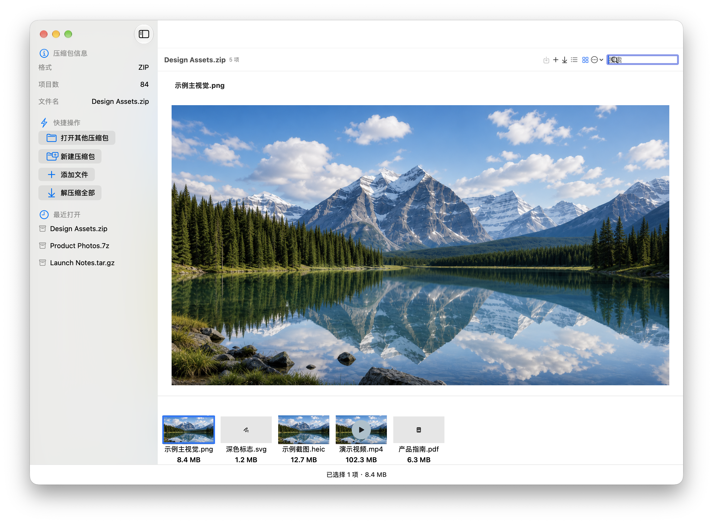

先预览，再提取
浏览和搜索压缩包内容，预览受支持的图片、视频、PDF 和文档，按需提取选中的文件。
支持常见格式
浏览和创建 ZIP、7z 和压缩 TAR 包。v1.3.0 的 Release 构建内置 7zz 26.03，可处理 7z、读取 RAR 和以只读方式打开 DMG、ISO，无需安装 Homebrew。创建 RAR 需使用外部 RARLAB 官方 rar。
在本机处理
解压会进行路径和资源检查。可选的引擎版本检查会联网读取版本信息。

浏览和搜索压缩包内容，预览受支持的图片、视频、PDF 和文档，按需提取选中的文件。
浏览和创建 ZIP、7z 和压缩 TAR 包。v1.3.0 的 Release 构建内置 7zz 26.03，可处理 7z、读取 RAR 和以只读方式打开 DMG、ISO，无需安装 Homebrew。创建 RAR 需使用外部 RARLAB 官方 rar。
解压会进行路径和资源检查。可选的引擎版本检查会联网读取版本信息。